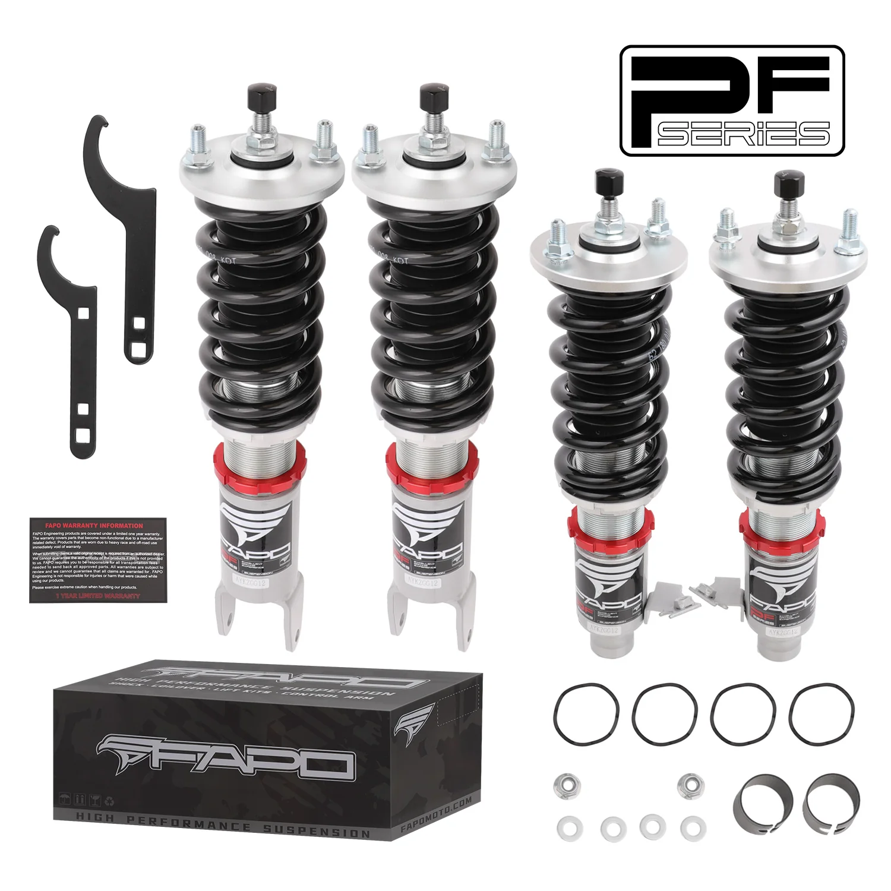

1 / 1732-stopniowe zawieszenie gwintowane Do HONDA CIVIC 1988-2000 INTEGRA 1990-2001 PF002420
Zastosowanie: Honda Civic 4. generacji (widelec tylny) EF/ED 1988-1991 Honda Civic 5. generacji (widelec tylny) EG6/EH 1992-1995 Honda Civic 6. generacji (widelec tylny) EK/EM/DC2/EJ 1996-2000 Honda CR-X 2. generacji (widelec tylny) ED8/ED9 1988-1991 Acura Integra drugiej generacji DA5-DA9, DB1-DB2 1990-1993 Acura Integra 3. generacji (widelec tylny, z wyłączeniem typu R) DB/DC 1994-2001 Notatka: To jest zestaw obni…
Application: Honda Civic 4th Gen (rear-fork) EF/ED 1988-1991 Honda Civic 5th Gen (rear-fork) EG6/EH 1992-1995 Honda Civic 6th Gen (rear-fork) EK/EM/DC2/EJ 1996-2000 Honda CR-X 2nd Gen (rear-fork) ED8/ED9 1988-1991 Acura Integra 2nd Gen DA5-DA9, DB1-DB2 1990-1993 Acura Integra 3rd Gen (rear-fork, excludes Type R) DB/DC 1994-2001 Note: This is a lowering kit; even at maximum height the vehicle will sit 1-1.5 inches lower than stock. Please confirm you want to lower your car before purchase. Package Includes: Front coilovers × 2 Rear coilovers × 2 Spanners × 2 Features: Mono-tube shock design, provides larger oil & gas capacity Adjustable ride height (max height still 1-1.5" lower than factory) Adjustable pre-load spring tension High-tensile performance spring: < 0.04 % distortion after 600 k cycles, surface-treated for durability Rubber boots included on all inserts to protect dampers & keep clean Better handling without sacrificing ride comfort Quick, cost-effective way to upgrade appearance Easy installation with proper tools Suitable for track, drift, fast-road, and daily driving All pictured accessories included Default 1-year warranty for any manufacturing defect, upgrade to 2 years with our Extended Warranty Program Technical Specifications: Spring rate Front: 10 kg/mm (557 lbs/in) Spring rate Rear: 8 kg/mm (446 lbs/in) Adjustable height: Yes Adjustable camber plate: No Adjustable damper: 32-level damper force adjustment
2499,99 PLN
Opis produktu
Zastosowanie:
- Honda Civic 4. generacji (widelec tylny) EF/ED 1988-1991
- Honda Civic 5. generacji (widelec tylny) EG6/EH 1992-1995
- Honda Civic 6. generacji (widelec tylny) EK/EM/DC2/EJ 1996-2000
- Honda CR-X 2. generacji (widelec tylny) ED8/ED9 1988-1991
- Acura Integra drugiej generacji DA5-DA9, DB1-DB2 1990-1993
- Acura Integra 3. generacji (widelec tylny, z wyłączeniem typu R) DB/DC 1994-2001
Notatka:To jest zestaw obniżający; nawet przy maksymalnej wysokości pojazd będzie siedział 1-1,5 cala niżej niż fabrycznie. Przed zakupem potwierdź chęć obniżenia samochodu.
Zawartość zestawu:
- Gwinty przednie × 2
- Gwinty tylne × 2
- Klucze × 2
Cechy produktu:
- Konstrukcja amortyzatora z pojedynczą rurką zapewnia większą pojemność oleju i gazu
- Regulowana wysokość jazdy (maksymalna wysokość nadal 1-1,5 cala niższa niż fabryczna)
- Regulowane napięcie sprężyny wstępnej
- Sprężyna o dużej wytrzymałości na rozciąganie: < 0,04% odkształcenia po 600 tys. cykli, powierzchnia obrobiona w celu zapewnienia trwałości
- Gumowe buty dołączone do wszystkich wkładek chronią amortyzatory i utrzymują je w czystości
- Lepsze prowadzenie bez utraty komfortu jazdy
- Szybki i ekonomiczny sposób na poprawę wyglądu
- Łatwa instalacja przy użyciu odpowiednich narzędzi
- Nadaje się do toru, driftu, szybkiej jazdy i codziennej jazdy
- W zestawie wszystkie akcesoria widoczne na zdjęciu
- Standardowa roczna gwarancja na każdą wadę produkcyjną, możliwość rozszerzenia do 2 lat w ramach naszego programu rozszerzonej gwarancji
Dane techniczne:
- Twardość sprężyny Przód: 10 kg/mm (557 lbs/in)
- Twardość sprężyny Tył: 8 kg/mm (446 lbs/in)
- Regulowana wysokość: Tak
- Regulowana płyta camber: Nie
- Regulowany amortyzator: 32-stopniowa regulacja siły amortyzatora
Application:
- Honda Civic 4th Gen (rear-fork) EF/ED 1988-1991
- Honda Civic 5th Gen (rear-fork) EG6/EH 1992-1995
- Honda Civic 6th Gen (rear-fork) EK/EM/DC2/EJ 1996-2000
- Honda CR-X 2nd Gen (rear-fork) ED8/ED9 1988-1991
- Acura Integra 2nd Gen DA5-DA9, DB1-DB2 1990-1993
- Acura Integra 3rd Gen (rear-fork, excludes Type R) DB/DC 1994-2001
Note: This is a lowering kit; even at maximum height the vehicle will sit 1-1.5 inches lower than stock. Please confirm you want to lower your car before purchase.
Package Includes:
- Front coilovers × 2
- Rear coilovers × 2
- Spanners × 2
Features:
- Mono-tube shock design, provides larger oil & gas capacity
- Adjustable ride height (max height still 1-1.5" lower than factory)
- Adjustable pre-load spring tension
- High-tensile performance spring: < 0.04 % distortion after 600 k cycles, surface-treated for durability
- Rubber boots included on all inserts to protect dampers & keep clean
- Better handling without sacrificing ride comfort
- Quick, cost-effective way to upgrade appearance
- Easy installation with proper tools
- Suitable for track, drift, fast-road, and daily driving
- All pictured accessories included
- Default 1-year warranty for any manufacturing defect, upgrade to 2 years with our Extended Warranty Program
Technical Specifications:
- Spring rate Front: 10 kg/mm (557 lbs/in)
- Spring rate Rear: 8 kg/mm (446 lbs/in)
- Adjustable height: Yes
- Adjustable camber plate: No
- Adjustable damper: 32-level damper force adjustment
FAPO Polska
Ten produkt obsługujemy lokalnie
Autoryzowana obsługa
FAPO Polska prowadzi katalog, kontakt i zamówienia bez odsyłania klienta do zewnętrznych sklepów.
Dobór po aucie
Sprawdzamy dopasowanie produktu do pojazdu, rocznika i wersji przed finalizacją zamówienia.
Wsparcie po zakupie
Masz kontakt w Polsce w sprawach zamówień, wysyłki, gwarancji i zwrotów.